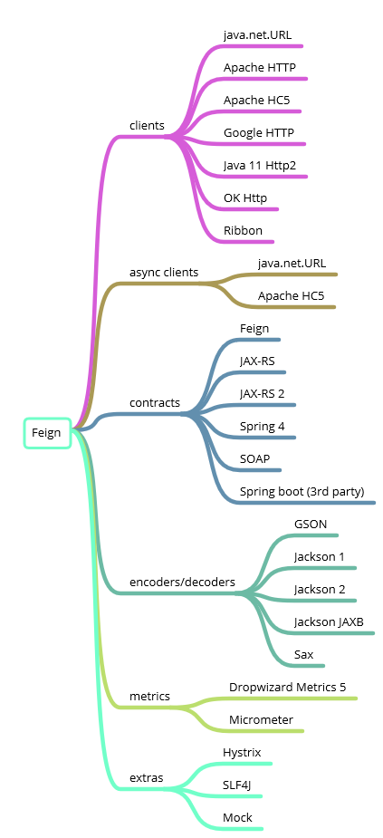

OpenFeign 简介
Feign 是一个声明式的 Web Service 客户端。它的出现使开发 Web Service 客户端变得很简单。使用 Feign 只需要创建一个接口加上对应的注解，比如：FeignClient 注解。Feign 有可插拔的注解，包括 Feign 注解和 JAX-RS 注解。Feign 也支持编码器和解码器，Spring Cloud Open Feign 对 Feign 进行增强支持 Spring MVC 注解，可以像 Spring Web 一样使用 HttpMessageConverters 等。Feign 是一种声明式、模板化的 HTTP 客户端。在 Spring Cloud 中使用 Feign，可以做到使用 HTTP 请求访问远程服务，就像调用本地方法一样的，开发者完全感知不到这是在调用远程方法，更感知不到在访问 HTTP 请求。
OpenFeign 官网：https://github.com/OpenFeign/feign
这是一张由 feign 提供的当前主要功能的图：

OpenFeign 的功能特点
- 可插拔的注解支持，包括 Feign 注解和 JAX-RS 注解。
- 支持可插拔的 HTTP 编码器和解码器（Gson，Jackson，Sax，JAXB，JAX-RS，SOAP）。
- 支持 Hystrix 和它的 Fallback。
- 支持 Ribbon 的负载均衡。
- 支持 HTTP 请求和响应的压缩。
- 灵活的配置：基于 name 粒度进行配置
- 支持多种客户端：JDK URLConnection、apache httpclient、okhttp，ribbon）
- 支持日志
- 支持错误重试
- url支持占位符
- 可以不依赖注册中心独立运行
OpenFeign 的主要依赖
OpenFeign 下还有一些子项目：feign-form、feign-jackson、feign-gson、feign-slf4j 等。
io.github.openfeign.feign-core：核心包。io.github.openfeign.feign-jackson：该模块增加了对通过 Jackson 编码和解码的 JSON 支持。io.github.openfeign.feign-gson：该模块增加了对通过 Gson 库编码和解码的 JSON 支持。io.github.openfeign.feign-form：该模块增加了对application/x-www-form-urlencoded和multipart/form-data表单进行编码的支持。io.github.openfeign.feign-slf4j：该模块允许将 Feign 的日志记录定向到 SLF4J，从而使您可以轻松地使用自己选择的日志记录后端（Logback，Log4J等）。
OpenFeign 接口注解
Feign 注释定义关联接口与基础客户端之间应如何工作。Feign 的默认定义了以下注释：
| Annotation | Interface Target | Usage |
|---|---|---|
| @RequestLine | Method | Defines the HttpMethod and UriTemplate for request. Expressions, values wrapped in curly-braces {expression} are resolved using their corresponding @Param annotated parameters. |
| @Param | Parameter | Defines a template variable, whose value will be used to resolve the corresponding template Expression, by name. |
| @Headers | Method, Type | Defines a HeaderTemplate; a variation on a UriTemplate. that uses @Param annotated values to resolve the corresponding Expressions. When used on a Type, the template will be applied to every request. When used on a Method, the template will apply only to the annotated method. |
| @QueryMap | Parameter | Defines a Map of name-value pairs, or POJO, to expand into a query string. |
| @HeaderMap | Parameter | Defines a Map of name-value pairs, to expand into Http Headers |
| @Body | Method | Defines a Template, similar to a UriTemplate and HeaderTemplate, that uses @Param annotated values to resolve the corresponding Expressions. |
OpenFeign 使用实例
官网文档：https://github.com/OpenFeign/feign#feign-makes-writing-java-http-clients-easier
POM
pom.xml 配置如下：
1 | <properties> |
Basics
Example：
1 | interface GitHub { |
Customization
Feign有几个可以定制的方面。对于简单的情况，可以使用 Feign.builder() 来使用自定义组件构造 API 接口。对于请求设置，可以在 target() 上使用 options(Request.Options options) 来设置 connectTimeout、connectTimeoutUnit、readTimeout、readTimeoutUnit、followRedirects。
Example：
1 | interface Bank { |
Gson
Gson 包括可用于JSON API 的编码器和解码器。将 GsonEncoder 和、或 GsonDecoder 添加到您的 Feign.Builder 中，如下所示：
Example：
1 | public class Example { |
Jackson
Jackson 包含可与 JSON API 一起使用的编码器和解码器。像这样将 JacksonEncoder 和、或 JacksonDecoder 添加到您的 Feign.Builder 中：
Example：
1 | public class Example { |
Java 11 Http2
Http2Client 将 Feign 的 http 请求定向到 Java11 New HTTP/2 Client 来实现 HTTP/2。要将新的 HTTP/2 客户端与 Feign 一起使用，请使用 Java SDK11。然后，将 Feign 配置为使用 Http2Client：
Example：
1 | GitHub github = Feign.builder() |
Hystrix
HystrixFeign 配置 Hystrix 提供的熔断器支持。要将 Hystrix 与 Feign 一起使用，请将 Hystrix 模块添加到您的类路径中。 然后使用 HystrixFeign 构建器：
Example：
1 | public class Example { |
SOAP
SOAP 包括可与 XML API 一起使用的编码器和解码器。该模块增加了对通过 JAXB 和 SOAPMessage 编码和解码 SOAP Body 对象的支持。通过将它们包装到原始 javax.xml.ws.soap.SOAPFaultException 中，它还提供了 SOAPFault 解码功能，因此您只需要捕获 SOAPFaultException 即可处理 SOAPFault。
Example：
1 | public class Example { |
注意：如果 SOAP 错误被响应返回的是 HTTP 的错误编码（4xx，5xx 等），则可能还需要添加 SOAPErrorDecoder。
SLF4J
SLF4J 模块允许将 Feign 的日志记录定向到 SLF4J，从而使您可以轻松地使用自己选择的日志记录后端（Logback，Log4J 等）。要将 SLF4J 与 Feign 一起使用，请将 SLF4J 模块和您选择的 SLF4J 绑定都添加到类路径中。 然后，配置 Feign 以使用 Slf4jLogger：
Example：
1 | public class Example { |
Decoders
Feign.builder() 允许您指定其他配置，例如如何解码响应。如果接口中的任何方法返回的类型除了 Response，String，byte [] 或 void 外，您都需要配置一个非默认的 Decoder。以下是配置 JSON 解码的方法（使用 feign-gson ）：
Example：
1 | public class Example { |
Encoders
将请求主体发送到服务器的最简单方法是定义一个 POST 方法，该方法具有 String 或 byte [] 参数，并且上面没有任何注释。 您可能需要添加 Content-Type 标头。
Example：
1 | interface LoginClient { |
通过配置编码器，您可以发送类型安全的请求正文。 这是使用 feign-gson 扩展的示例：
Example：
1 | static class Credentials { |
Headers
根据使用情况，Feign 支持请求头的设置，更容易作为 api 的一部分或作为客户端的一部分。在特定接口或调用应始终设置某些标头值的情况下，将标头定义为 api 的一部分是有意义的。可以使用 @Headers 注解在 api 接口或方法上设置静态标头。
Example：
1 |
|
方法可以使用 @Headers 中的变量扩展为静态标头指定动态内容。
Example：
1 | public interface Api { |
Request Interceptors
当您需要更改所有请求时，无论它们是什么目标，都需要配置一个 RequestInterceptor。例如，如果您充当中介，则可能要传播 X-Forwarded-For 标头。
Example：
1 | static class ForwardedForInterceptor implements RequestInterceptor { |
拦截器的另一个常见示例是身份验证，例如使用内置的 BasicAuthRequestInterceptor。
Example：
1 | public class Example { |
Error Handling
如果您需要对处理意外响应的更多控制，则 Feign 实例可以通过构建器注册自定义 ErrorDecoder。
Example：
1 | public class Example { |
所有导致 HTTP 状态不在 2xx 范围内的响应都将触发 ErrorDecoder 的解码方法，使您可以处理响应，将失败包装到自定义异常中或执行任何其他处理。 如果要再次重试该请求，则抛出 RetryableException。 这将调用已注册的重试器。
Retry
默认情况下，Feign 将自动重试 IOException，而与 HTTP 方法无关，将它们视为与网络临时相关的异常，以及从 ErrorDecoder 抛出的任何 RetryableException。要自定义此行为，请通过构建器注册自定义 Retryer 实例。
Example：
1 | public class Example { |
重试程序负责通过从方法 continueOrPropagate(RetryableException e) 返回 true 或 false 来确定是否应进行重试。 将为每个客户端执行创建一个 Retryer 实例，如果需要，您可以在每个请求之间维护状态。如果确定重试不成功，则将抛出最后一个 RetryException。要抛出导致重试失败的原始原因，请使用 exceptionPropagationPolicy() 选项构建 Feign 客户端。
If you like this blog or find it useful for you, you are welcome to comment on it. You are also welcome to share this blog, so that more people can participate in it. If the images used in the blog infringe your copyright, please contact the author to delete them. Thank you !